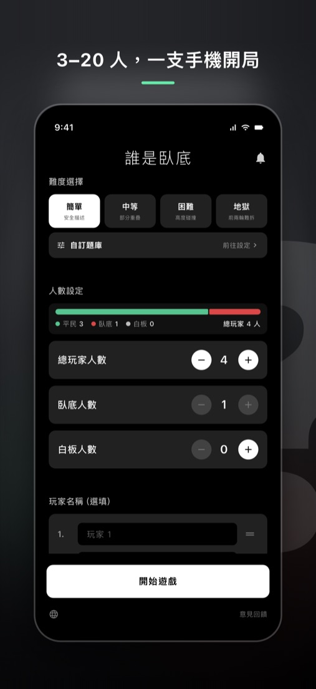
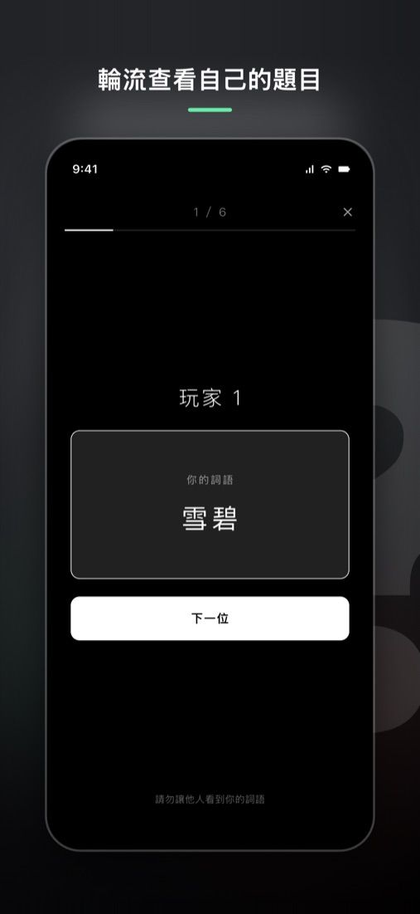
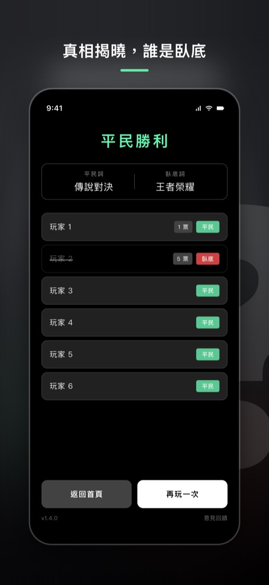

選人數與題目
設定玩家、臥底、白板人數，挑選難度或自己的題庫。
3–20 人的猜詞派對遊戲
大家輪流看自己的詞，只有臥底拿到不同答案。描述得太清楚會露餡，太模糊又會被懷疑。把手機傳下去，現在就開局。

HOW TO PLAY / 玩法
第一次玩誰是臥底？先從 4–6 人、1 位臥底、不放白板開始。每輪的重點是聽出「誰講的詞跟大家不太一樣」。
設定玩家、臥底、白板人數，挑選難度或自己的題庫。
每位玩家只看自己的詞，看完隱藏畫面再傳下一位。
不能直接說答案。每輪發言後，投票淘汰最可疑的人。
IN THE GAME / 實際畫面


WHY THIS APP / 遊戲特色
手機輪流傳，3–20 人都能加入。聚餐、尾牙、迎新或露營，打開就能開局。
簡單、中等、困難、地獄四種難度。詞語相近又好描述，每局都有新線索。
自訂題庫可加入朋友、公司或班級的梗。選自訂題庫開局，就只會用你出的題。
選主持人當面統計，或輪流傳手機秘密投票；發言順序也能依座位或全隨機。
THE RULES / 完整規則
每個人都會拿到一個詞，其中少數人的詞和其他人很相似，但不一樣。拿到相同詞的是「平民」，拿到不同詞的是「臥底」。大家輪流描述自己的詞，從彼此的描述中找出藏在裡面的臥底。
例如平民拿到「海豹」，臥底拿到「海狗」：說「住在海邊」兩邊都對，說「會拍手」就可能露出馬腳。
START HERE / 開局建議
App 支援 3 到 20 人，臥底人數必須少於總人數的一半，白板最多 2 人。下面是常見的配置，第一次玩可以照這個開：
| 人數 | 臥底 | 白板 |
|---|---|---|
| 3–5 人 | 1 | 0 |
| 6–8 人 | 1–2 | 0–1 |
| 9–12 人 | 2–3 | 1 |
| 13–20 人 | 3–5 | 1–2 |
臥底越多、詞越接近，平民越難贏；想讓局面平衡，先調整難度再調臥底人數。
WORD PAIRS / 題目
好題目是兩個詞有共同特徵、但有一個關鍵差別，例如「包子／饅頭」差在有沒有餡。下面 30 組取自 App 題庫，可以直接拿去玩；第一次玩建議從簡單開始。App 內建 2,034 組，分同樣四種難度。
差異明顯，兩輪內通常就能抓到臥底。適合新手、長輩、小朋友。
| 平民詞 | 臥底詞 |
|---|---|
| 包子 | 饅頭 |
| 50嵐 | 清心 |
| 全家 | 7-11 |
| 雞蛋糕 | 車輪餅 |
| 豆漿 | 米漿 |
| 摩天輪 | 旋轉木馬 |
| 蝦皮 | momo |
| 鬆餅 | 可麗餅 |
有部分重疊，要想一下怎麼描述才不會露餡。適合朋友聚會。
| 平民詞 | 臥底詞 |
|---|---|
| 紅豆餅 | 雞蛋糕 |
| 業配 | 置入 |
| 貼文 | 限動 |
| 補習班 | 安親班 |
| 壽喜燒 | 涮涮鍋 |
| 減肥 | 健身 |
| 旅館 | 民宿 |
| 生活費 | 零用錢 |
兩個詞非常接近，平民之間也會互相懷疑。
| 平民詞 | 臥底詞 |
|---|---|
| ChatGPT | Gemini |
| 羨慕 | 嫉妒 |
| 佛系 | 隨緣 |
| 米粉 | 冬粉 |
| 自負 | 自信 |
| 蝸牛 | 蛞蝓 |
| 原神 | 薩爾達 |
前兩輪幾乎分不出來，靠聯想和梗，最容易笑成一團。
| 平民詞 | 臥底詞 |
|---|---|
| 已讀不回 | 句點 |
| 檸檬 | 酸民 |
| 韭菜 | 散戶 |
| 蟑螂 | 室友 |
| 客戶 | 上帝 |
| 鸚鵡 | 複讀機 |
| 放屁 | 施放毒氣 |
朋友之間的梗、公司或班上的人名事物，可以在「自訂題庫」自己新增，開局只會從你建立的題目出題。
大家當面討論或舉手表決，再由拿手機的人點選要淘汰的玩家。節奏快，適合面對面的聚會。白板被投出時可以猜詞。
手機依序交給每位存活玩家秘密投票，最高票的人淘汰。平票時由其他玩家在平票者之間再投一次，仍平票就隨機淘汰其中一人。適合不想當面表態的時候。
朋友聚會、家庭聚餐、過年團圓、公司尾牙、迎新、營隊團康、班級活動、露營夜晚。不需要道具、不用每個人都裝 App，一支手機傳下去就能玩；不用連網，山上或地下室也能開。
下載免費，每個難度可以先玩 30 題，自訂題庫不用付費。購買完整版是一次買斷，解鎖全部題目並移除廣告；換手機在 App 內按「恢復購買」就能找回。
FAQ / 常見問題
App 支援 3 到 20 人，臥底人數必須少於總人數的一半，白板最多 2 人。
不能直接說出詞語。建議也不要說出詞裡的字或直接翻譯成外語，否則太容易被猜到。
主持人投票模式下，白板被投出時可以打字猜一次平民的詞：猜中就由白板獨自獲勝，平民和臥底都算輸；猜錯就出局、遊戲繼續，畫面不會透露答案。輪流投票模式沒有猜詞，白板被淘汰就直接出局。
是同一類。誰是臥底源自中國的聚會遊戲，英文常叫 Undercover 或 word imposter game，日本叫ワードウルフ（ワード人狼）。核心都是「少數人拿到相似但不同的詞」，臥底一開始也不知道自己是臥底，要從別人的描述發現。和狼人殺不同，誰是臥底不需要法官、不分夜晚白天，一支手機就能開局。
可以直接用本頁的 30 組，或用「誰是臥底」App：內建 2,034 組題目、分簡單到地獄四種難度，每種難度免費玩 30 題，也能自己新增題目。
挑一個本來就有梗的詞，配一個字面上不相干、但特徵相同的詞，例如「蟑螂／室友」「鸚鵡／複讀機」。描述時大家都說得通，誤會越多越好笑。
不用。只要一支手機，輪流傳給每個人看自己的詞就可以。
可以選「順序」或「全隨機」。「順序」依座位輪流發言，每局隨機決定往哪個方向；「全隨機」每局把發言順序完全打亂。
下載免費，每個難度可以先玩 30 題，自訂題庫不用付費。完整版是一次買斷，解鎖全部題目並移除廣告。
Android 版準備中，上架後會在這裡放 Google Play 連結。
傳一支手機，就能開始下一局。
免費下載App Store